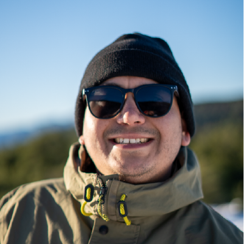

SOBRE MI
Soy Osvaldo Vivar Vivanco, padre de tres hermosos niños, y me titulé
en Técnico en Diseño y Producción Digital. Actualmente, resido en
Copiapó, Atacama, Chile, y me dedico a la fotografía y al
mantenimiento de varias páginas web. Mi pasión por la fotografía me
permite capturar momentos únicos y transformarlos en obras de arte
visuales que reflejan mi talento y mi ojo crítico. Además, mi
formación en diseño y producción digital me ha dotado de las
habilidades necesarias para crear y mantener sitios web atractivos y
funcionales. Actualmente, estoy expandiendo mis conocimientos en el
campo de la tecnología, estudiando Full Stack JavaScript en Desafío
Latam. Esta formación me permitirá dominar las últimas tecnologías y
metodologías de desarrollo web, ampliando aún más mi conjunto de
competencias.
Te invito a visitar mi currículum digital, donde podrás explorar mis
proyectos y conocer más sobre mi trayectoria y habilidades.
